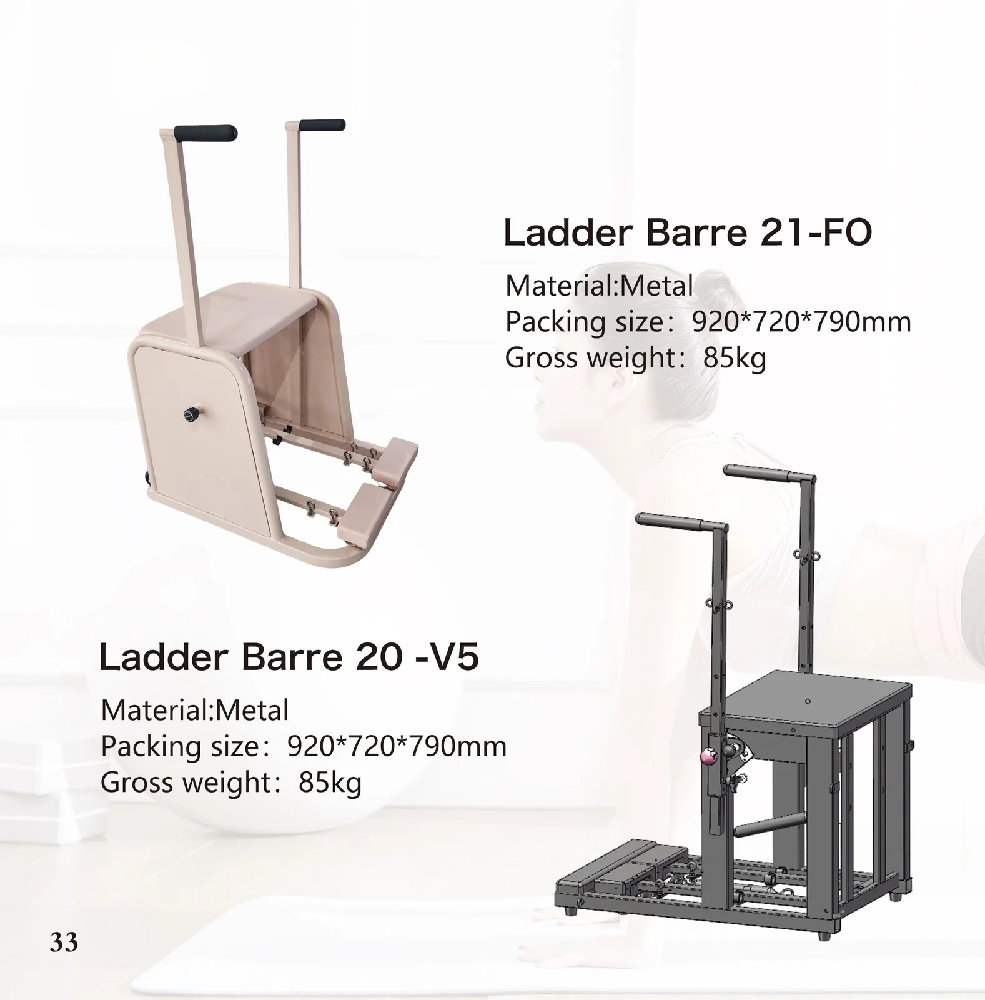
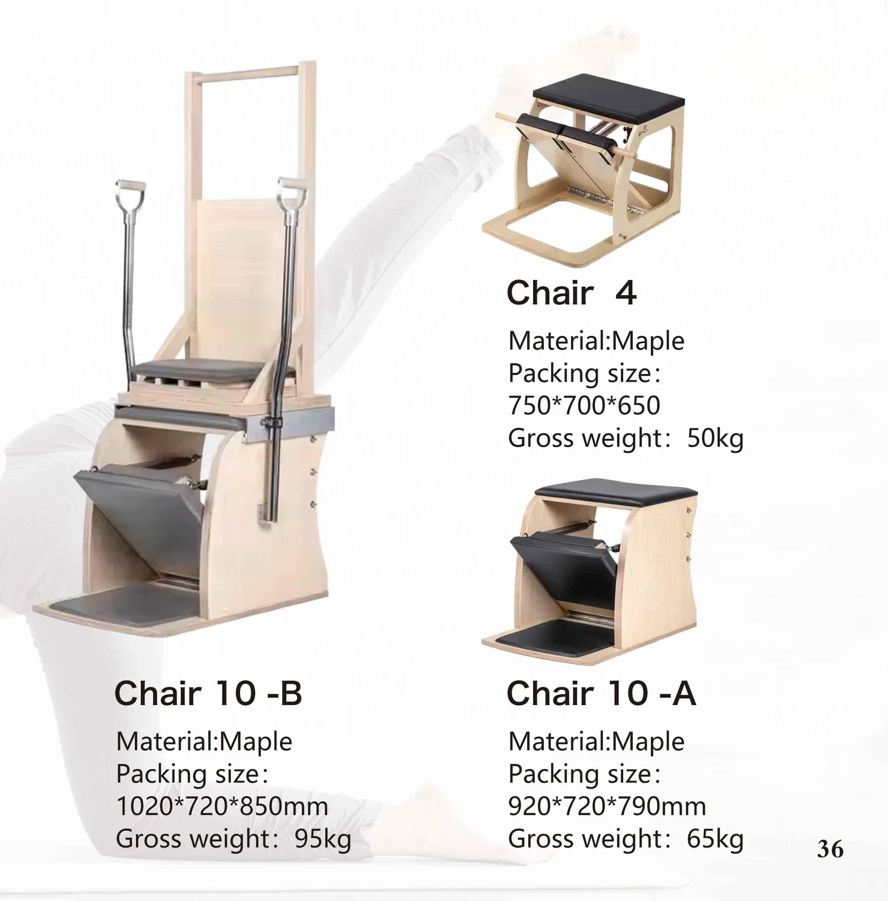
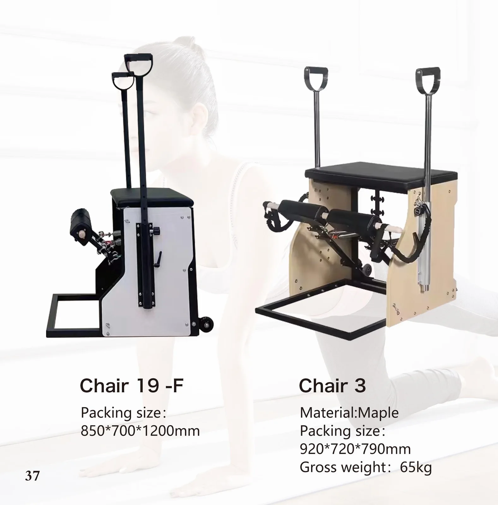
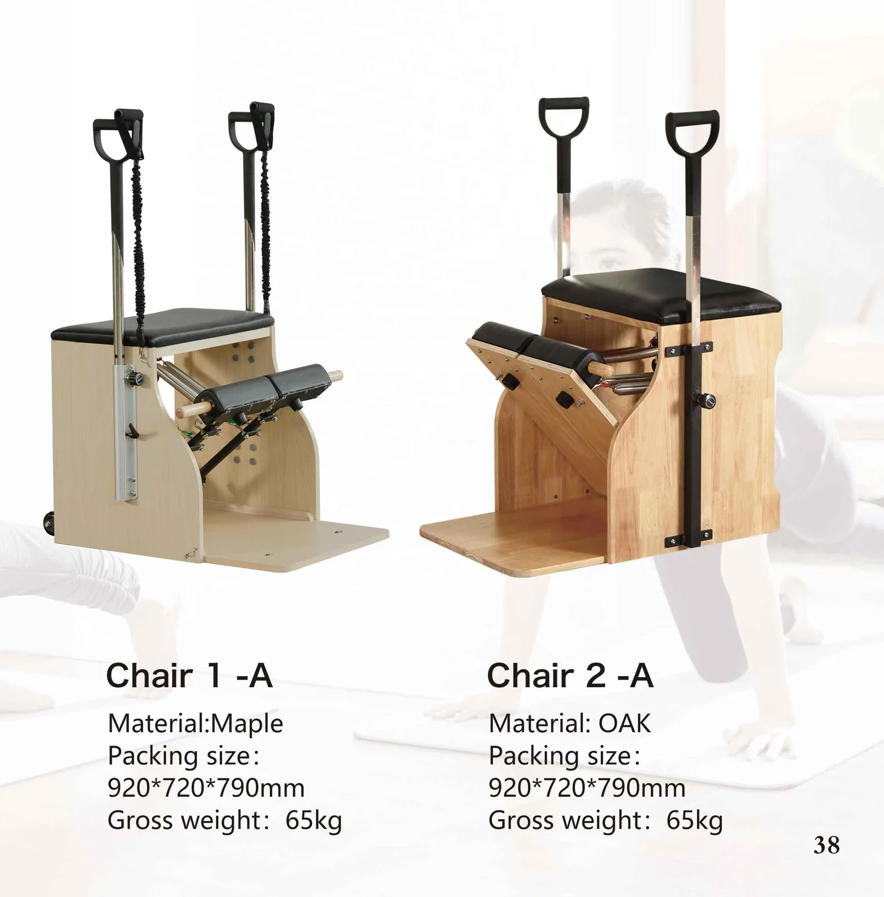

Chair 21-FO
Catalogue p33 · modèle 1 sur 2
- Matériau
- Métal
- Dimensions d'emballage
- 920 × 720 × 790 mm
- Poids brut
- 85 kg
Également appelé Chaise de Pilates dans notre catalogue en anglais
Un piano droit compact à colonne à ressort, doté d'une pédale articulée, conçu pour les cours particuliers et les petits studios. Pédale réglable à plusieurs positions, quincaillerie en acier inoxydable et structure permettant de l'installer dans un coin.

Chaque appareil ci-dessous figure dans notre catalogue 2026. Choisissez le modèle — nous établissons le devis sur ce code exact.
Chaque image est une page de catalogue exactement telle qu'imprimée. La spécification gravée dans l'image est reprise en texte dessous — afin qu'elle puisse être recherchée, traduite et collée directement dans un bon de commande.

Catalogue p33 · modèle 1 sur 2
Catalogue p33 · modèle 2 sur 2

Catalogue p36 · modèle 1 sur 3
Catalogue p36 · modèle 2 sur 3
Catalogue p36 · modèle 3 sur 3

Catalogue p37 · modèle 1 sur 2
Catalogue p37 · modèle 2 sur 2

Catalogue p38 · modèle 1 sur 2
Catalogue p38 · modèle 2 sur 2
Groupés par gamme, dans l'ordre du catalogue. Un tiret signifie que le catalogue n'imprime pas cette valeur — nous la confirmons à chaque commande.
| Modèle | Matériau | Taille d'emballage A | Taille d'emballage B | Poids brut |
|---|---|---|---|---|
| Chair 21-FO | Métal | 920 × 720 × 790 mm | — | 85 kg |
| Chair 20-V5 | Métal | 920 × 720 × 790 mm | — | 85 kg |
| Chair 4 | Érable | 750 × 700 × 650 mm | — | 50 kg |
| Chair 10-B | Érable | 1020 × 720 × 850 mm | — | 95 kg |
| Chair 10-A | Érable | 920 × 720 × 790 mm | — | 65 kg |
| Chair 19-F | — | 850 × 700 × 1200 mm | — | — |
| Chair 3 | Érable | 920 × 720 × 790 mm | — | 65 kg |
| Chair 1-A | Érable | 920 × 720 × 790 mm | — | 65 kg |
| Chair 2-A | Chêne | 920 × 720 × 790 mm | — | 65 kg |
Tous les modèles peuvent être personnalisés : matériau, couleur du revêtement, provenance des ressorts et emballage. Un tiret signifie que le catalogue 2026 n'imprime pas cette valeur — nous la confirmons à chaque commande.
Ouverture ou agrandissement d'un studio : ensembles assortis de 5 pièces, livrés en une seule commande et un seul envoi.
Programmes de chargement de conteneurs avec votre propre numérotation des modèles et votre propre fiche technique.
Fabrication en marque de distributeur : votre logo sur la monture, vos choix de couleur et de cuir.
Ladder Barrel, Spine Corrector et le site bidirectionnel Ladder Bed à usage clinique.
Des lignes compactes en aluminium et pliables, idéales pour les espaces bien-être aux dimensions réduites.
Emballage et étiquetage adaptés au programme FBA pour les références destinées à l'Reformere grand public et les articles pliables.
Demandez dès aujourd'hui un devis personnalisé et des échantillons gratuits.
Contactez notre équipe